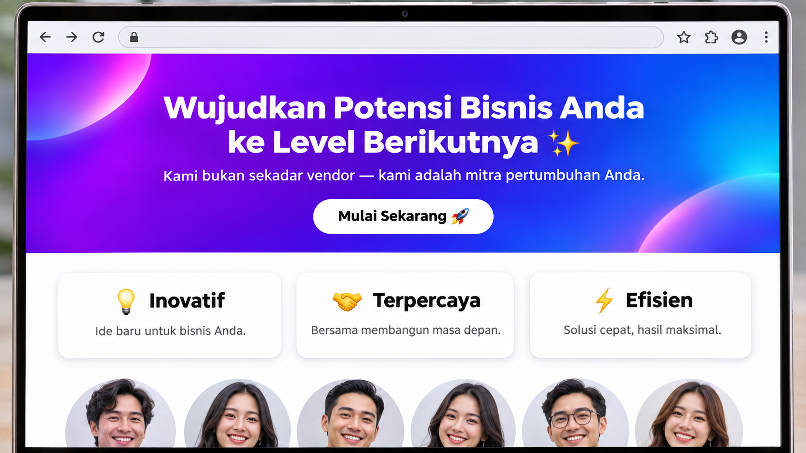
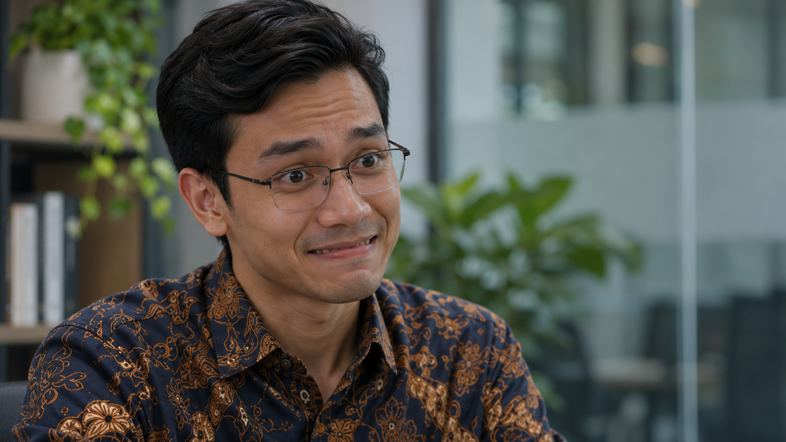
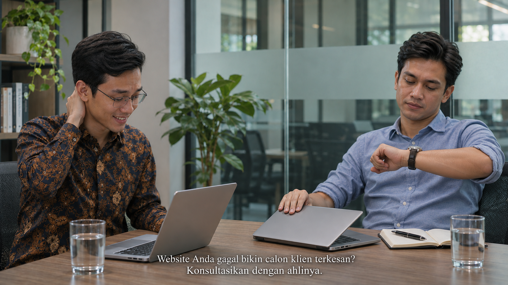

Kelihatan Aja
Visual / aksiTwo-shot dari samping meja. Masing-masing dengan laptopnya sendiri, ditaruh agak ke samping supaya wajah tidak tertutup. Pembuka: si pitcher sedang menjelaskan sesuatu dengan bersemangat, tangannya ikut bergerak. Suaranya tidak terdengar, tertutup musik pembuka. Calon klien condong ke depan, buku catatannya terbuka, pulpen di tangan, mengangguk berminat. Teks di layar: POV: lagi pitching ke calon klien. Musik mengecil. Si pitcher menunjuk sekilas ke layar laptopnya sendiri. "Lengkapnya bisa dilihat di website kami, Pak." Calon klien beralih ke laptopnya.
AudioMusik pembuka yang lembut, menutupi penjelasan si pitcher. Musik mengecil dan hilang tepat sebelum dialog pertama.
Visual / aksiDari balik bahu si pitcher. Calon klien meletakkan pulpen di atas buku catatan yang masih terbuka, mengetik sebentar di laptopnya sendiri, lalu mulai scroll.
AudioBunyi ketikan singkat, lalu scroll yang ringan.

Visual / aksiInsert layar: dia scroll pelan. Hero dengan gradasi ungu-biru, headline dengan emoji, tiga kartu berikon, foto tim yang terlalu mulus.
AudioBunyi scroll.
Visual / aksiClose-up calon klien. Dia masih menatap layar, mata sedikit menyipit. Lalu mengangkat pandangan ke si pitcher. "Ini buatnya pakai AI, ya?" Nadanya datar, sekadar bertanya.
AudioDialog.

Visual / aksiClose-up si pitcher. Senyum percaya dirinya berhenti di tengah jalan dan berubah jadi senyum canggung. Dia berkedip, melirik laptop sebentar, lalu kembali ke calon klien. "Kok tahu?"
AudioHening sesaat, lalu dialog.
Visual / aksiDari balik bahu si pitcher. Calon klien mengangkat tangannya dari laptop dan sedikit mundur. Wajahnya tenang. "Kelihatan aja." Diucapkan pelan, nyaris tanpa senyum, tanpa gerakan lain.
AudioDialog. Selebihnya hening.

Visual / aksiTwo-shot seperti shot 1. Calon klien bersandar, menurunkan layar laptopnya setengah, lalu melirik jam tangannya. Si pitcher masih tersenyum canggung, satu tangan memegang tengkuk, matanya ke website-nya sendiri yang masih terbuka di laptopnya. Adegan terus berjalan di balik teks penutup.
AudioSuasana ruang meeting. Tidak ada musik.
Dialog
| Waktu | Siapa | Kalimat |
|---|---|---|
| 00:03.5 | Si pitcher | Lengkapnya bisa dilihat di website kami, Pak. |
| 00:14.5 | Calon klien | Ini buatnya pakai AI, ya? |
| 00:18.5 | Si pitcher | Kok tahu? |
| 00:21.5 | Calon klien | Kelihatan aja. |
Teks penutup (di atas shot 7)
| Waktu | Teks |
|---|---|
| 00:24.5–00:28 | Website Anda gagal bikin calon klien terkesan? |
| 00:26–00:28 | Konsultasikan dengan ahlinya. |
| 00:28–00:30 | Imajiner |
Tipografi serif putih yang kalem, di atas adegan yang tetap berjalan. Tanpa freeze-frame, tanpa layar hitam, tanpa transisi dramatis.
Gambar dibuat dengan GPT Image sebagai acuan visual, bukan frame final. Bisnis dan website di cerita ini fiktif.